Prosthetics & cybernetics


Intro
A running log of my work on prosthetics and cybernetics.
My first brush with cybernetics was General Molotov, the cyborg general from the Russian sci-fi campaign in Empire Earth. I used to draw him in 3rd grade and my teacher would look at me funny.
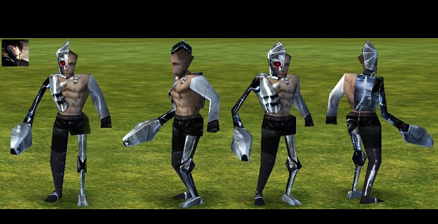
Later I watched a TV documentary about Jeremiah "Jerry" Teehan, a blind man who got some of his sight back through William Dobelle's artificial vision system: a camera on his glasses wired straight into electrodes on his visual cortex. That one really caught my attention.
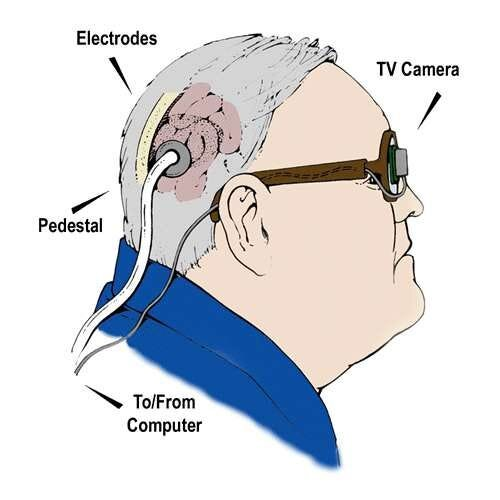
In my second semester of college, during a very boring quantum computing class, I sat next to a friend who was missing a few fingers. We became friends right away and I wanted to build him a prosthetic arm. My CAD skills sucked, but I could make up for that with embedded systems, electronics and ML, so I teamed up with other people. My attempts are logged below.
I've since taken a drop year from college to explore ideas in neuroscience and AI, but building him a complete arm is still a goal sitting in the back of my head.
Another big source of inspiration is Mike Pondsmith's Cyberpunk universe, where companies like Dynalar and Kiroshi make implants that give people back the limbs and sight they've lost so they can live normal lives. This might be the wrong lesson to take from cyberpunk lmao but yes people in general have a better quality of life thanks to implants, other cyberpunk media like Ghost in The Shell have also influenced me.
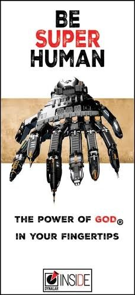
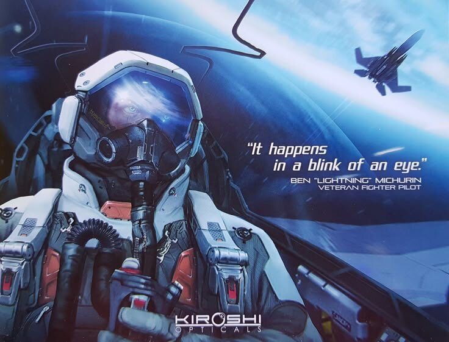
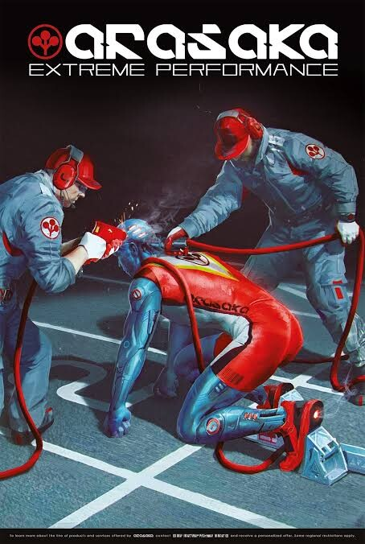
Writing
A beginner's guide to waging jihad against the Demiurge. Why accelerating science and technology is how we break the natural laws of death, disease and scarcity.
Log
Touch prostheses wip
Will update soon, waiting on parts lol
Neural prostheses: restoring fly vision from the connectome research
Moving from the arm to the brain: can a connectome, the full wiring diagram of a nervous system, be used to design a neural prosthesis? Using the male Drosophila connectome, a camera-driven prosthesis replaces a fly's damaged early visual pathway (photoreceptors through T4/T5 motion cells) and writes into the intact circuit downstream. The goal is to bring back the looming escape, where a fly jumps away from something approaching.
| sensor | camera resampled onto a 721-facet model compound eye at 200 Hz |
| encoder | correlator motion detector (~50 ms leaky memory), 4 direction-selective T4/T5 channels |
| circuit | 82 right-side LPLC2 cells, their inhibitory partners, ~2,000 synapses into the giant fiber, giant fiber to jump/flight motor neurons |
| neurons | leaky integrate-and-fire giant fiber and motor neurons, graded LPLC2 |
| body | NeuroMechFly physics simulation |
- Every approaching object fired the giant fiber. Sideways motion, dimming, receding objects and forward walking never did.
- Downstream timing matches biology: the jump motor neuron fires 0.2 ms after a giant fiber spike, and the body leaves the ground 5 ms later.
- It escapes late. The giant fiber first fires when the object is 61-73° wide, while a real fly's looming detectors respond most strongly at about 42°, and it doesn't fire at all for approaches faster than ~20 mm/s. The connectome wiring isn't the cause: the delay comes from the encoder, which doesn't respond to small objects, and the unmodelled LC4 pathway is another suspect.
- Next: add LC4, make the looming detectors spike, and pair it with an event camera for a fully spiking camera-to-jump prosthesis.

Can connectomes help us design neural prostheses? 🧠🦾 🪰
— Shunya Research (@shunyaresearch) October 3, 2026
We tried to design one for a fruit fly. We give a simulated blind fly a camera and a hand-built motion detector, we then wired everything downstream of that straight into its connectome.
Here’s how we did it:
A fly pic.x.com/gb8EYVXQ2I
EMG-controlled prosthetic arm done
The follow-up to silverhand, built as a team project at university. Instead of if-else rules on sensor readings, it reads muscle activity from the forearm and classifies what the hand is trying to do. Surface EMG electrodes feed an Arduino Uno, a Python pipeline filters the signal and extracts features, and an SVM picks the gesture, which then drives a 3D printed tendon hand. A digital twin, a 3D arm rendered in PyGame/PyOpenGL, mirrors the predictions live.
| input | single-channel surface EMG (AD8232), sampled at 1 kHz |
| processing | 50 Hz notch filter, 200-sample windows with 50% overlap |
| features | RMS, MAV, zero crossings, variance, peak-to-peak |
| model | SVM (RBF kernel), 2 gestures: rest, fist |
| actuation | MG90 servos, tendon (string) driven, PLA |
| controller | Arduino Uno |
- More channels would give more control, but hardware costs are a bottleneck.
- Less bulky than silverhand, but still not optimized enough to be actually useful.
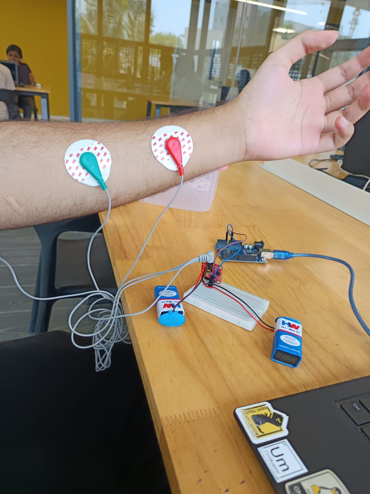
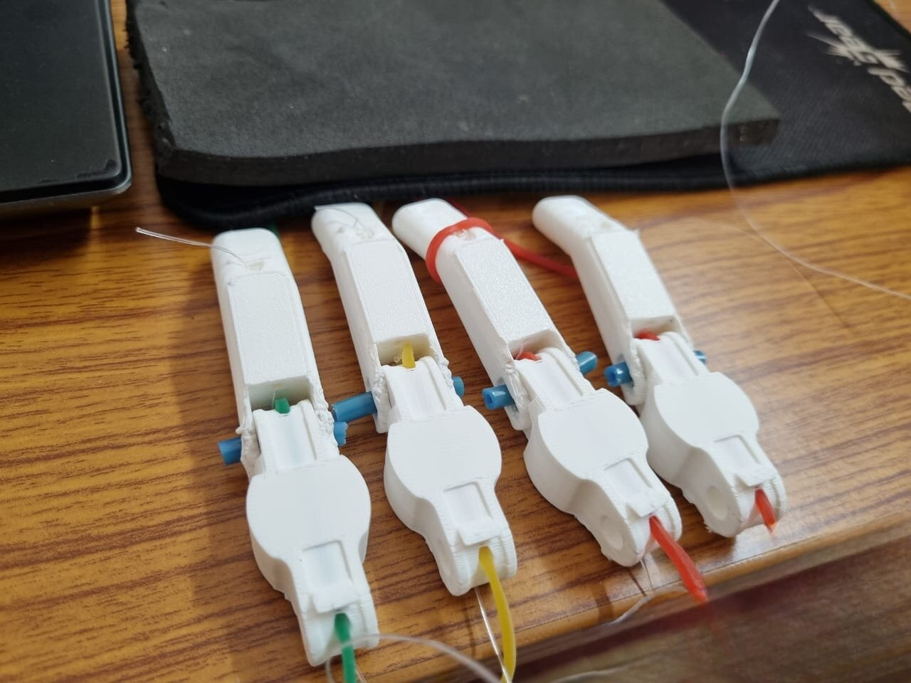
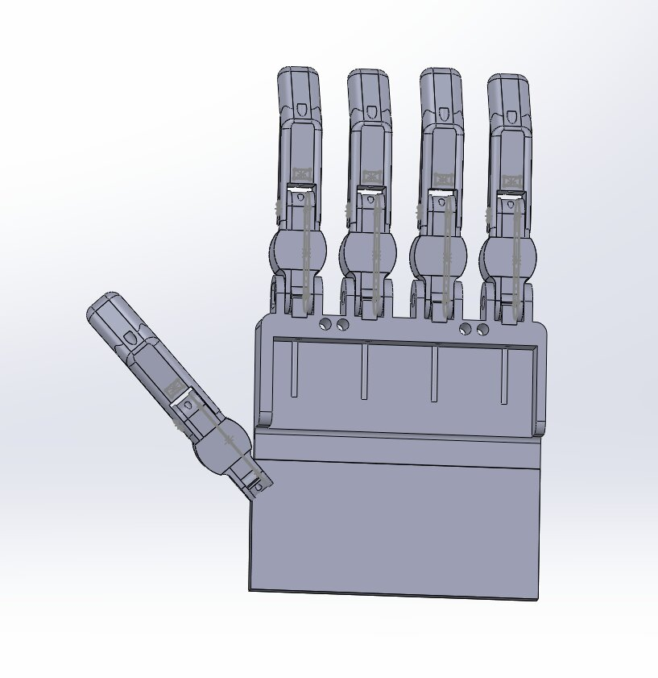
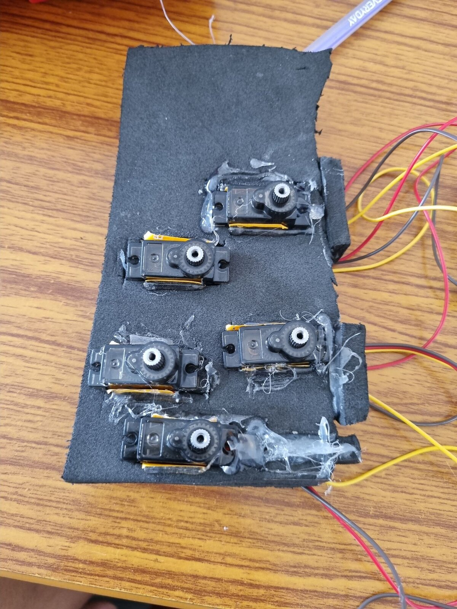
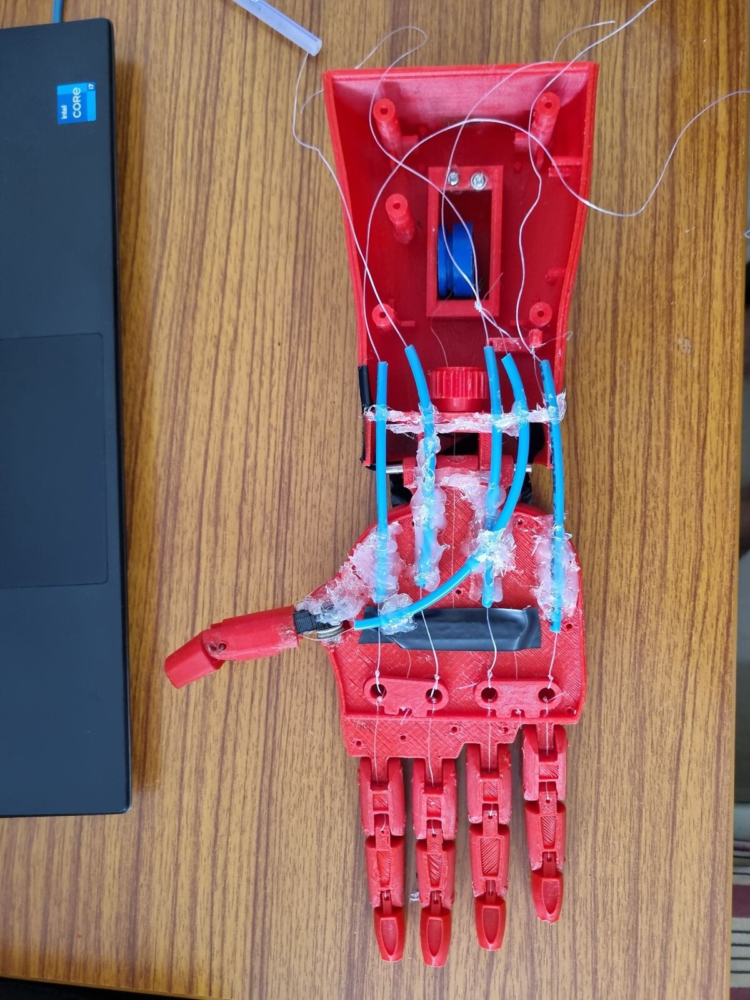
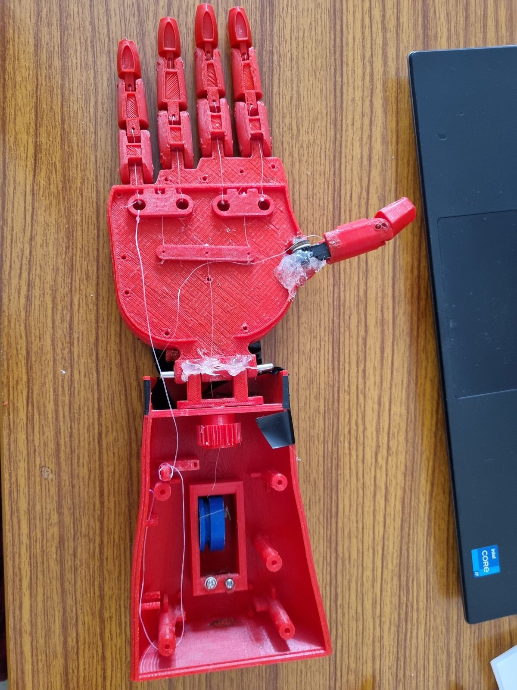
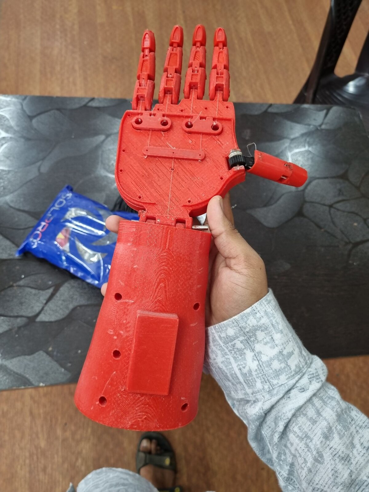
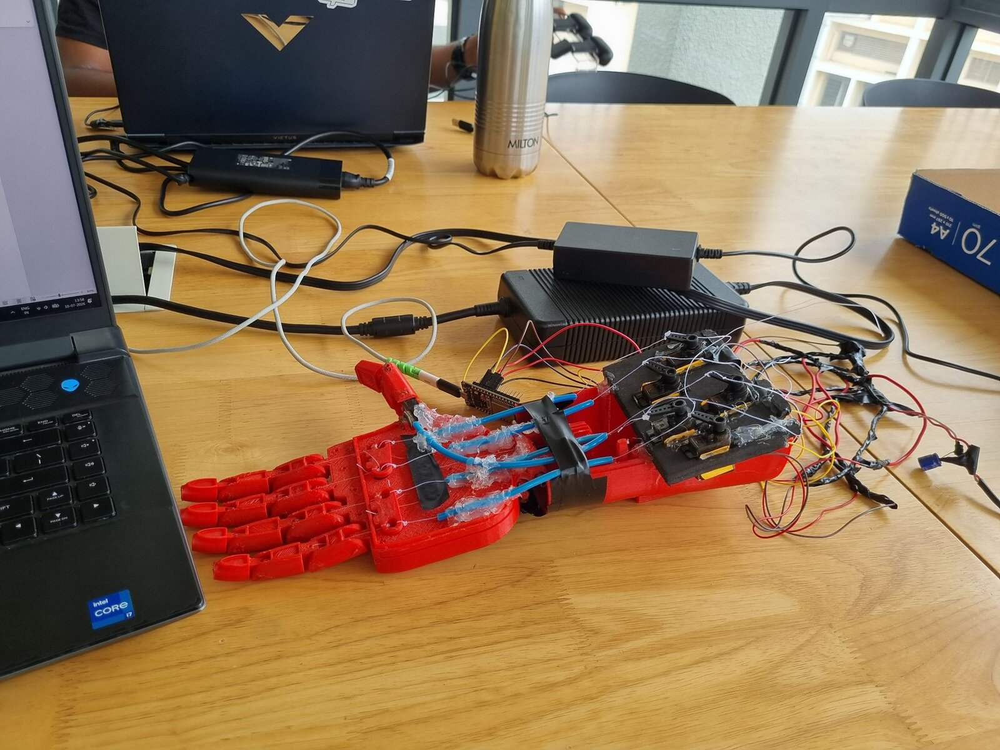
silverhand done
My first cybernetic arm prototype. A 3D printed hand where servos on the forearm pull string tendons to curl each finger. Piezoelectric sensors pick up input and firmware written in C++ maps the readings to servo angles.
| input | piezoelectric sensors |
| actuation | servos, tendon (string) driven |
| firmware | C++ |
| controller | Arduino Uno |
| dof | 5 (one per finger) |
- Could grip simple objects.
- Piezoelectric sensors work well as an input.
- The design itself was too big and bulky.
- The control logic was just a couple of if-else statements. It needed to be smarter than that.
- It was purely reactive. A real prosthetic should work with intent and naturally, not just react to sensor readings.
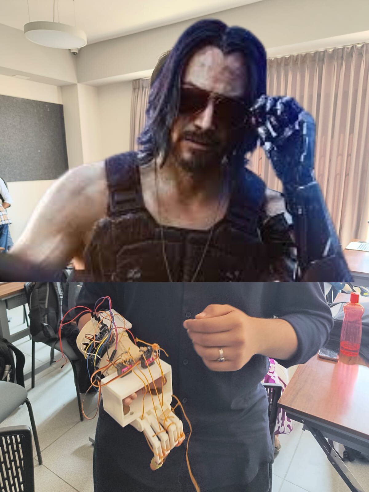
Listening to
not playing anything rn
Links
Site navigation


My button
If you liked my site, add my button =]
Banners
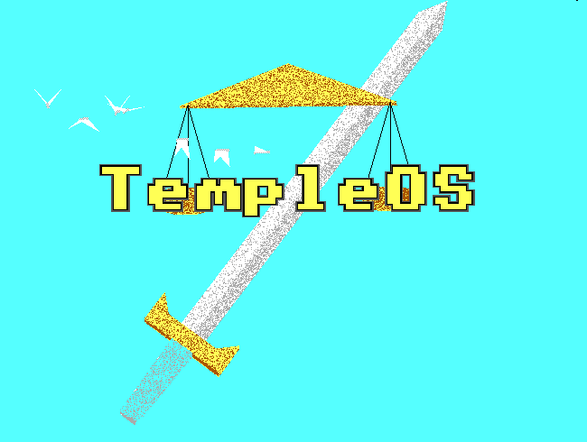
Use Temple OS

Listen to Aphex Twin

Play Cyberpunk 2077
"An idiot admires complexity, a genius admires simplicity"
— Terry A Davis